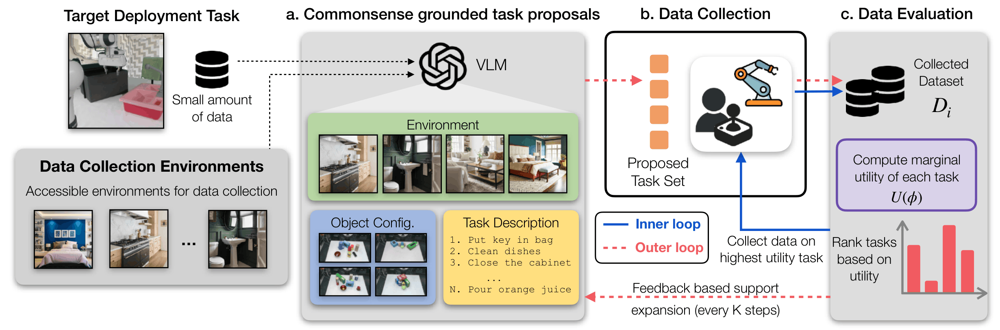

Imitation learning policies in robotics are trained on datasets collected through costly real-world teleoperation. Often, the data-collection process is unguided, relying on the teleoperator's intuition, resulting in data that contributes little to overall policy performance. Recent work has shown that curating such unguided datasets can substantially improve policy performance, but these approaches operate by filtering existing datasets after collection and therefore do not prevent the acquisition of uninformative data. In this work, we propose GUILD, a novel Guided Data Collection (GDC) method that actively reasons about which data should be collected to maximize downstream policy performance. We introduce an iterative framework that alternates between 1) task proposal and data collection and 2) data evaluation to close the loop. For task proposal, we leverage semantic priors from vision-language models to identify relevant environments, object configurations, and goals for data collection. However, since semantic relevance does not imply policy improvement, we perform data evaluation. By leveraging predictive data attribution we approximate how the collected trajectories influence policy performance on a target deployment setting. This signal is then used as feedback to guide subsequent data collection, closing the data collection loop.
GUILD operates in an iterative loop that alternates between task proposal and data collection, and data evaluation. For task proposal, GUILD leverages semantic priors from vision-language models to identify relevant environments, object configurations, and goals for data collection. However, since semantic relevance does not necessarily imply policy improvement, GUILD performs data evaluation by leveraging predictive data attribution to approximate how the collected trajectories influence policy performance on a target deployment setting. This signal is then used as feedback to guide subsequent data collection, closing the data collection loop.

We show a few steps of the GUILD data collection loop to give an insight into how it operates. In the first step of task proposal, GUILD creates an initial support set of commonsense-grounded tasks using a VLM and available information about the target task as well as training task assets and available objects. Since the initial proposals are merely a guess, we then perform data evaluation by using predictive data attribution to estimate how the collected trajectories influence policy performance on the target deployment setting. The data evaluation step identifies which tasks are important from the support set providing more granular feedback to the data collector on which tasks to collect data on in the next iteration.
We design 6 real-world scenes with different objects, layouts, and backgrounds. Given a target task in a deployment setting, we generate data from the remaining scenes using GUILD and a set of baselines. We then evaluate the performance of policies trained on this data in the target deployment setting. Across both the simulation (see paper) and real-world settings, we find that GUILD outperforms other baselines including experienced roboticists.